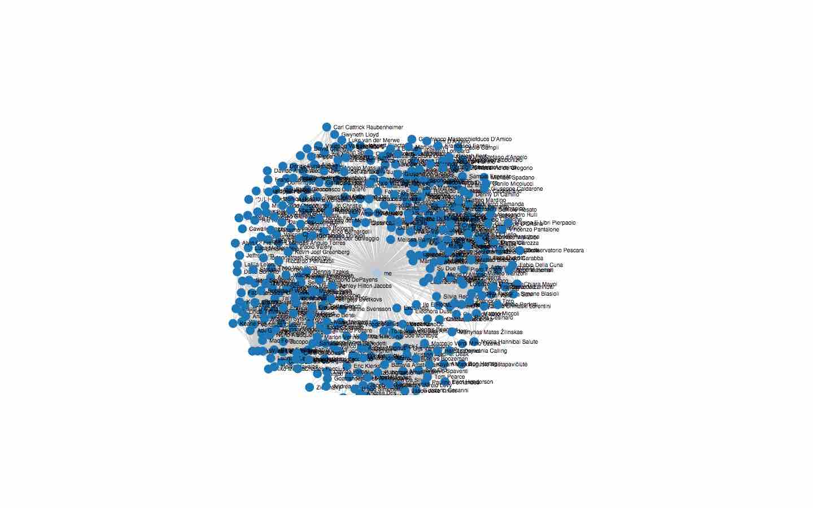
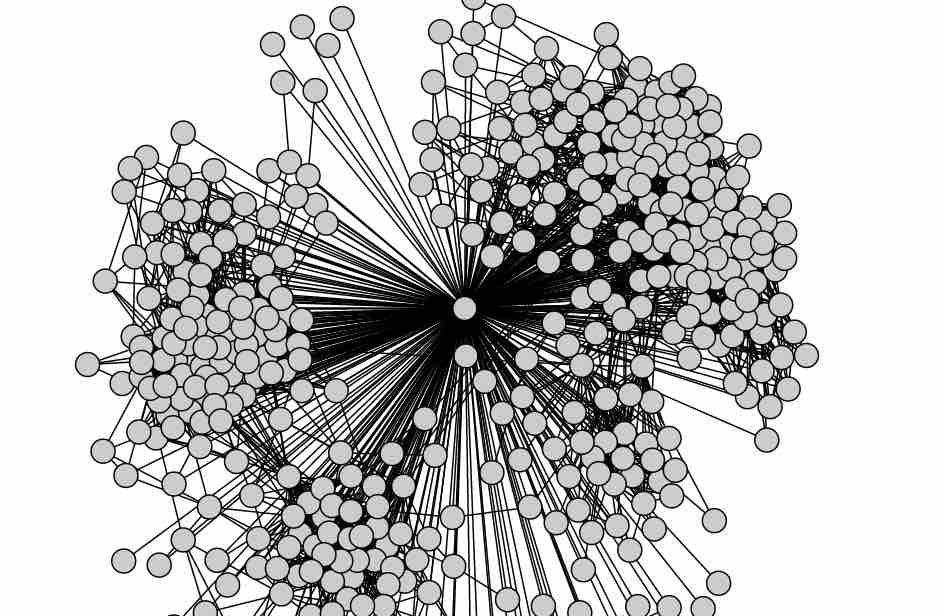
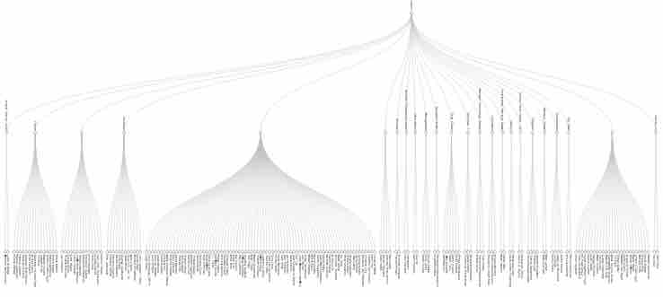
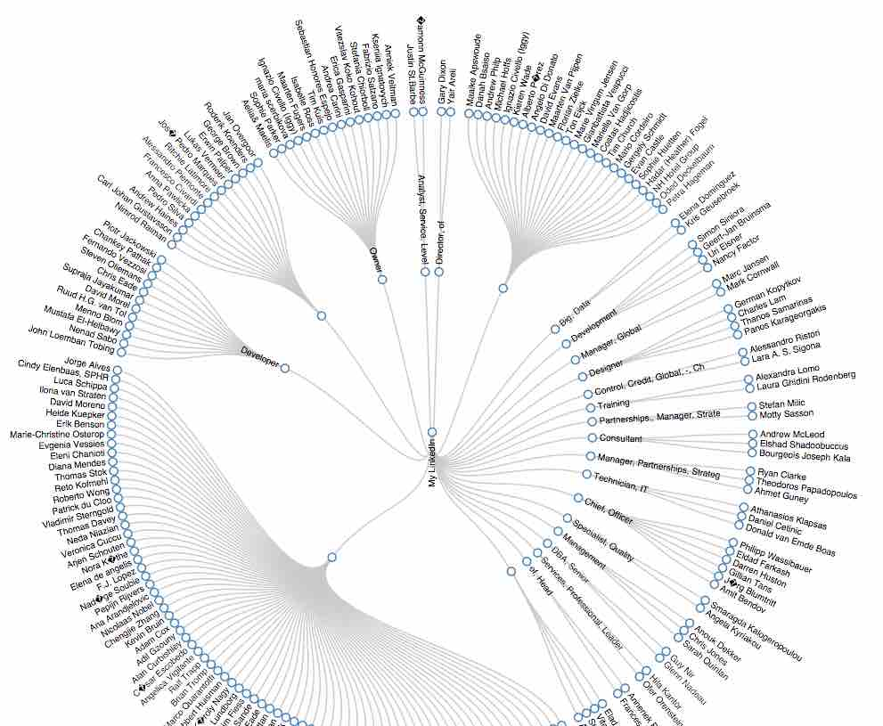

PORTFOLIO
A collection of data visualizations created using open source tools such as d3.js





A collection of data visualizations created using open source tools such as d3.js
I am a data geek, passionate about big data and visualisations. I evangelise the creation of meaningful (and possibly interactive) data visualisations using FOSS such as D3.js.